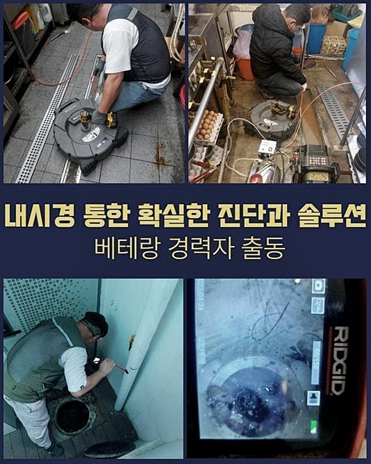
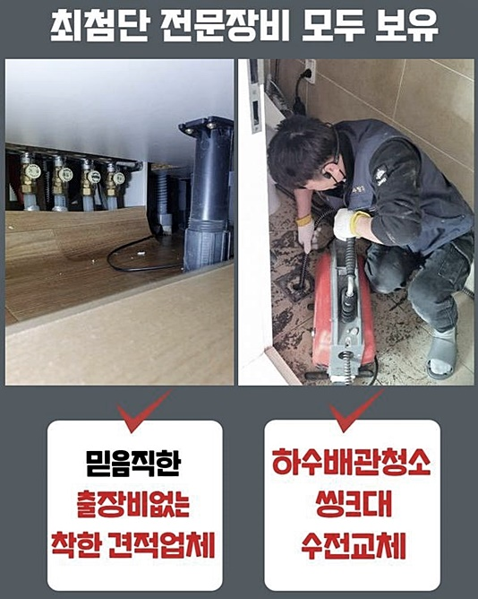
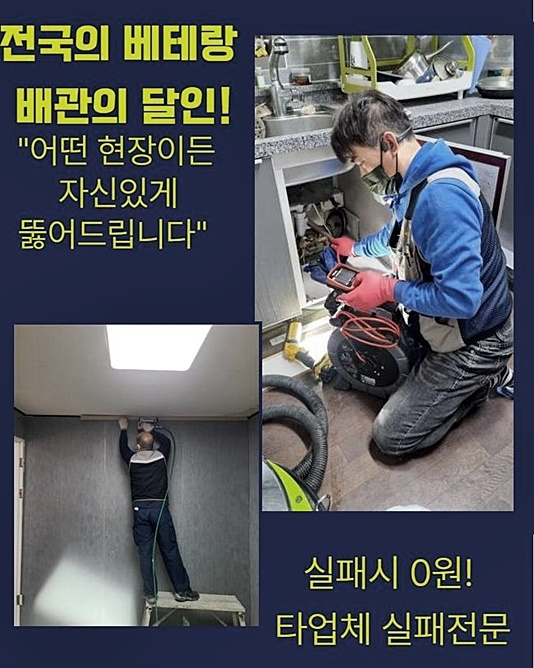
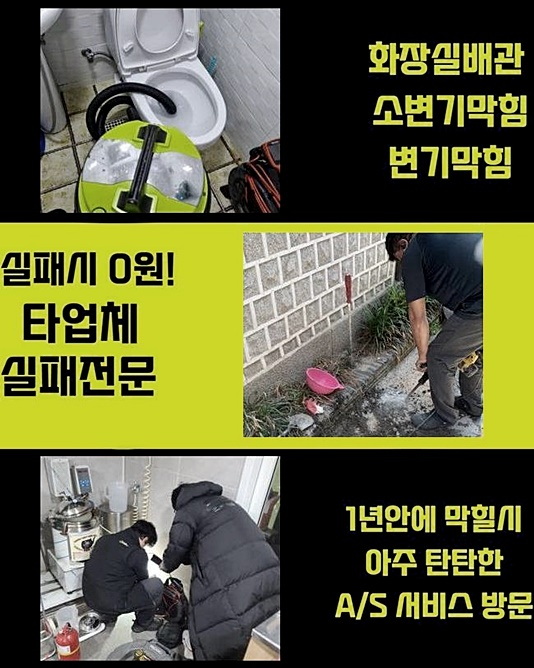
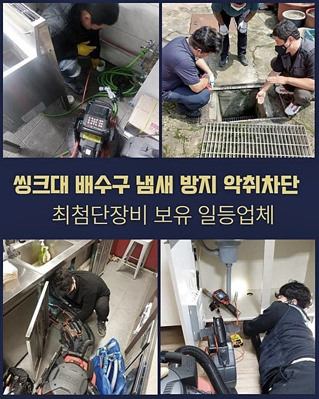
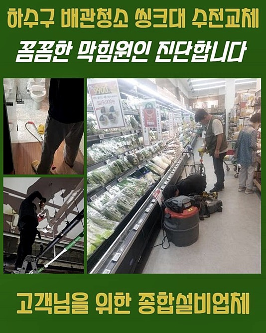

🏠 중랑구 면목동화장실뚫음 신내동 오수맨홀청소 물샘전문업체
용인시 처인구 배관막힘 전문 시공 후기

📋 작업 개요
- 위치: 용인시 처인구, 수원시 영통구, 화성시 동탄
- 서비스 유형: 배관막힘, 고압세척, 내시경점검
- 작업 일시:
- 업체명: 하수구수사대 (010-5615-2118)
🔍 문제 상황
중랑구 면목동화장실뚫음 신내동 오수맨홀청소 물샘전문업체
인사 올리겠습니다 고객의 생활측면을 방해하는 통수문제들을 조속하고 오차없이 시정하는 전문가인데요
지금부터 다양한 사람들이 집내부서 생겨나는 문제들을 보면서 도움될만한 내용을 말씀드릴게요
무엇 때문에 위와같은 배수오류가 때때로 발생될까요?
알맞는 사항을 저희업체가 일러드리는 시간들을 마련했습니다
저희전문진이 만나뵈었었던 고객의 경우 문제들이 생겼을 때에 대부분은 곧 지나갈 증상으로 생각해 펄펄 끓고있는 물들을 쏟아내 물빠짐 문제들을 없애기위해서 시도해보기도 하죠
기름이 쌓여서 생긴 문제인것을 들어 수행하였으나
그도 잠시 잠시동안엔 해결된 듯 보이다 또 막혀버림과 동시에 역류증세도 엎친데 덮친격으로 나타났죠
이런 문제들로 자가적인 방법은 효과가없다 느끼신 의뢰인분은 해당 증상들을 시정해내는 저희전문진을 불러주셨으며 저희들은 안정적으로 피해를 해결했어야했죠
고객분의 의뢰를 접수하고 60분 안쪽으로 도착했죠
배수구쪽으로 솟구치는 모습을 목격하고 즉시 부속품들을 조심히 조절하여 바닥배관을 점검해주었습니다
벽면에 고착된 기름기들과 이물질 뿐만 아니라 배수관의 상단부까지 솟구친 하수들은 깊은곳까지 점검해야 될 필요가 있다는걸 알게해주었어요

🔎 원인 분석
💡 전문가 진단: 정밀 진단 장비를 사용하여 슬러지의 고착 여부를 판명하고 타격/세척 작업을 실시했습니다.
1차적으로 다기능을 맡고있는 흡입기로 안쪽의 오수와 잔재들을 빨아당겼습니다
잔해들이 올라왔으나 예상처럼 배수장애의 악영향을 미칠 양들이 아니였습니다
해당 이유로 저희의경우엔 더 깊은 곳에 문제들이 존재하는것으로 판단하고군데군데 빈틈없이 파악하게하는 내시경장치를 가용해보았습니다
깊이 내시경장치를 삽입하여문제의 원인과 어디에 문제들이 자리하고있는지 파악했죠
해당 과정은 점검해줄때만 중요한것이 아닌 작업이 끝난 뒤 테스트를 위한 때에도 없어선 안되죠
하수구 막힘 고민을 없애기위해서 한다면, 들어맞는 도구들을 마련한 전문가를 부르시는 것이 좋습니다
저희의 전문가는 이전에 손을 놓은 문제 상황에 있어서도 의뢰들이 끊이질 않아요
간혹 금액적 측면으로 인해 수행하기 쉬운 방식에 기대는 고객들이 있으세요
경제적인 부분이 중요한 조건 중 하나지만 배수관 오류의 2차피애의 가능성을 배제하시면 안됩니다
제때 해결을 안한다면 연결부분이 약해지면서 물들이 새는것처럼 더 큰 피해를 야기시킵니다
이러한 까닭에 간단하게 해결이 될만한지 내시경장비로.내시경기기로 이곳저곳 체크해보고 각 단계에 타겟을 두는게 중요한 사안인데 이럼으로써 변수상황에 대비할 수 있으며 놓치는 부분없이 청결하게 뚫는 작업이 이뤄진답니다
저희들은 쉽게 볼 수 있는 시설에관한 실력과 경험들을 가지고있는 배관 해결사입니다

🔧 작업 과정
의뢰자의 거주지를 깨끗하며 보건성을 유지한채로 생활하시게 노력을 기울여 만족감을 지원하고 있습니다
결함이 발생했다면 곧장 저희를 사용해 전화주세요
찾아뵈어 여러분들의 집을 군더더기 없이 만들어드리고 문제가 사라진 시점으로 복귀시킬것을 보장해드려요
내시경기기로 깊은 지점을 확인했더니 기름때로 범벅이 되어있던 것으로 파악되었어요
부피가 커서 석션기기로 풀어갈 수 없던 기조를 인지했어요
구석구석 자리잡은 딱딱해진 잔존물을 없애기위하여 샤프트장비라 일컫는 기계를 운용시켜야 했습니다
단계를 운용하여 잔여물질을 작게 제거하고 석션장치로 제거시킵니다
회전하고 있는 머리쪽의 노커들이 고착물을 쉽게 조심히 조절하여 분쇄해, 하수관을 청결히 세척하는 기능을 담당해요
작업들을 이어나가다가 해당 과정들을 중단한 채 확인해보았더니 샤프트장비의 체인에는 기름이 가득한 잔해물이 덕지덕지인 상태였어요
이러한 현상은 내부 문제가 지속되었다는것을 반증하고 지금의 위치를 꼼꼼하게 진행해주어야 하는것을 뜻하는것이였습니다
반복하여 내시경장치로 지금의 위치를 체크해보고 이물들이 기름이 가득한 대량인것을 관찰하고서 분쇄 내부 상황을 수행했습니다
석션장비로 음식물 오염물을 계속하여 빨아당기며 청소해주고 내측을 깨끗히 정리하였습니다
더군다나 단단한 잔해가 다량이라 내부 상황을 꼼꼼히 진행해주었습니다
이와같이 하수구 막힘 고민을 시정하는 저희 업체에서는, 문제가되는 잔해가 안보이는 시점까지 안정적으로 뚫는 지금의 위치를 이어갔습니다
내시경장비로 내측이 복구된걸 확인했는데요
배출되어 모이게된 오염원이 그 증거들이였어요
이것과같이 많은 양이 존재하는 상태에서는 증상들이 없어지지않죠
그리하여 이물질을 깨끗하게 사라지게끔 하는게 중요했으며 단순하게 석션장비로만 해결을 꾀하는건 일시에 불과하여 효과를 발휘하게 되고 단기간에 증상들을 불러오게하는데요
청소된 모습을 내시경장비로 체크했음에도 불구하고 작업을 하고 수돗물을 받은 뒤 테스트들을 이어갔는데요
이 과정들을 진행하며 배수관 물막힘증세가 야기된것은 아닌건지 이곳저곳 체크해보았고 그로인해 이상징후없이 수도들의 통수가 제대로 수행되었죠


✅ 작업 완료
저희전문진은 물빠짐 오류에 관한 원인들을 면밀히 파악한 뒤 의뢰자의 집에 적당한 대처들을 실시하고있죠
반복적으로 닮아있는 하수구 막힘 문제들이 똑같이 생기지못하게 하수관을 철저하게 정비했죠
하수구 내시경의 헤드부를 통하여 해결하는 단계들과 작업 이후의 점검과정 또한 고객님이 직관적으로 보실 수 있게끔 했답니다
이처럼 어려운 하수구가 제 기능을 못하는 사태에 빠져버렸다면 즉시 저희업체에게 말씀해주시기 바라요
저희의 전문가는 의뢰자의 불편들을 빠르게 해소하도록 모든 전문성과 노하우를 동원할 만반의 준비들을 하고있습니다



⚠️ 하수구 배관 막힘 예방 및 관리 가이드
- ✅ 머리카락, 비닐, 물티슈 등 물에 분해되지 않는 이물질은 절대 흘려보내지 마세요.
- ✅ 기름기 많은 식기는 설거지 전 키친타올로 먼저 기름때를 닦아내세요.
- ✅ 주기적으로 배수구에 뜨거운 물을 가득 부어주어 유지방 고착을 방지하세요.
- ✅ 작업 후 1년 이내 재발 시 무상 A/S 보증 서비스를 제공합니다.
💡 핵심 정리
- 확실한 장비 작업(내시경 점검 및 샤프트 스케일링)으로 원인을 뿌리 뽑습니다.
- 작업 후 1년 이내에 동일한 부위 재발 시 100% 무상 A/S 서비스를 보장합니다.
- 서울 · 경기 · 인천 전 지역에 24시간 언제든 긴급 출동할 수 있도록 항시 대기 중입니다.
❓ 자주 묻는 질문 (FAQ)
🚨 용인시 처인구 배관막힘 문제로 고민이신가요?
정확한 원인 진단과 확실한 시공으로 재발 없는 해결을 약속드립니다.
24시간 긴급 출동 | 서울 · 경기 · 인천 전지역 | 1년 내 재발 시 무상 A/S